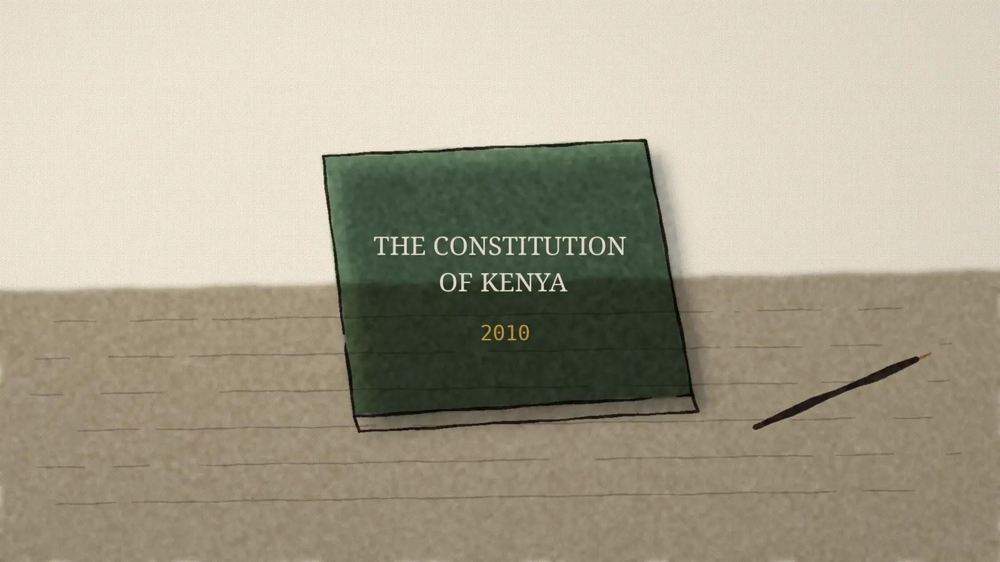

Your rights: what they are, and how to carry them in your head
Lesson 1 of 8

A night on the way home
It’s ten at night. Otieno is walking home when a police officer stops him. First the officer asks for his ID. Then his phone. Then, voice a little lower, “something small”.
Otieno has rights here. Several. He just doesn’t know which ones, and the officer is counting on that.
Otieno isn’t a real person. But you’ve met him. He’s in your matatu, your WhatsApp group, maybe your mirror. He’ll walk with us through this whole course.
A right is not a favour
Kenya’s Constitution says your rights “belong to each individual and are not granted by the State” (Art 19(3)).
Read that slowly. Not granted. The government didn’t give them to you, so it can’t take them back as a favour. You had them from birth.
And they don’t only bind the government. The Bill of Rights “binds all State organs and all persons” (Art 20(1)). That means your landlord, your boss, your pastor and your neighbour too.
So a right isn’t permission. It’s a claim: this is mine, and you must respect it.
Where the rights live
They live in Chapter Four of the Constitution, called the Bill of Rights: Articles 19 to 59. The rights themselves are in Articles 26 to 57. Many Articles hold more than one right. Article 43 alone has six.
Nobody remembers dozens of anything. So carry them in three groups.
Group 1: things you can DO (your freedoms)
| You can… | Article |
|---|---|
| Say what you think, and look for and share information | 33 |
| Believe and worship as you choose, or not at all | 32 |
| Join a group, or refuse to join one | 36 |
| Gather, march, picket and hand in petitions, peacefully and unarmed | 37 |
| Vote, join a party, campaign, and stand for office | 38 |
| Move around and live anywhere in Kenya | 39 |
| Own property in any part of Kenya | 40 |
| Ask for information the government holds | 35 |
Some speech is not protected: propaganda for war, incitement to violence, hate speech, and advocacy of hatred that stirs up ethnic hatred or attacks people for who they are (Art 33(2)). Lesson 3 comes back to this.
Group 2: things nobody can DO TO YOU (your protections)
| Nobody can… | Article |
|---|---|
| Treat you as less than others because of your tribe, sex, religion, disability, age, health, pregnancy, language or birth | 27 |
| Torture you, beat you, or punish you in a cruel or degrading way | 29 |
| Hold you as a slave, or force you to work | 30 |
| Search your body, home or phone, or take your things, without a lawful reason | 31 |
| Arrest you and hide you away. You must be told why, may stay silent, may call a lawyer, and must see a court within 24 hours | 49 |
| Try you unfairly | 50 |
Lesson 8 goes through what to do if you are arrested.
Group 3: things the State OWES you
Every person has the right to health care, decent housing and sanitation, enough food, clean water, social security and education (Art 43(1)). And nobody may be refused emergency medical treatment (Art 43(2)).
The Constitution is realistic. The State must deliver these step by step, as money allows (Art 21(2)). But there’s a clever rule: if the government says it can’t afford one of these rights, the government must prove the money isn’t there. Not you (Art 20(5)).
Some groups get extra protection: children (Art 53), people with disabilities (Art 54), youth (Art 55), minorities and marginalised groups (Art 56) and older people (Art 57).
Do you have to use them all?
No. Most rights work like a menu. You can stay silent when arrested, or talk. You can vote, or stay home. Voting is a right in Kenya, not a legal duty (Art 38(3)). And nobody can force you to join an association (Art 36(2)). So when someone says every boda rider at the stage must join his welfare group or leave, the Constitution is on the rider’s side.
But four rights can never be limited, not by Parliament and not even in a state of emergency (Art 25):
- Freedom from torture and cruel, inhuman or degrading treatment.
- Freedom from slavery or servitude.
- The right to a fair trial.
- The right to habeas corpus: if someone is holding you, a court can order them to bring you out.
Every other right can be limited, but only by a law, and only as far as is reasonable and justifiable in an open and democratic society (Art 24). A COVID curfew limited where people could go. It never cancelled their right not to be beaten.
Your one duty
The Constitution gives you many rights and one duty: “Every person has an obligation to respect, uphold and defend this Constitution” (Art 3(1)).
You can’t defend something you’ve never read. This course is your first page.
So, back to Otieno at the roadside. His phone is covered by his right to privacy (Art 31). And the “something small”? Nobody has a right to that. It’s a bribe.
What you can do
- Learn the three groups: DO, DON’T DO TO ME, OWE. When something feels wrong, ask which group it falls in.
- Read the real words. The whole Constitution is free at kenyalaw.org. Start with Articles 19 to 59.
- Stay calm and name the right. “I have a right to know why I’m being arrested (Art 49)” is more powerful than shouting.
- Write things down: date, time, place, names, badge numbers, witnesses. A complaint with details goes further.
- Remember you can go to court if a right is violated or threatened, for yourself or for someone else, and no fee may be charged to start the case (Art 22).
Where to go
| If… | Go to |
|---|---|
| Any right in the Bill of Rights was violated | KNCHR: SMS 22359, complaint@knchr.org |
| You were treated unfairly because of your sex, disability, age or another ground | NGEC: toll free 0800 720 187 |
| A police officer abused you | IPOA: toll free 1559 |
| A government office refused you service or information | Ombudsman (CAJ): toll free 0800 221 349 |
| You need a lawyer and can’t afford one | National Legal Aid Service: toll free 0800 720 640 |
Full details are in WHERE-TO-GO.md.
Quick quiz
- Who gave you your rights?
- Name the three groups of rights.
- A hospital says it can’t treat you in an emergency until you pay a deposit. Which Article helps you?
- Name two of the four rights that can never be limited.
- Is voting compulsory in Kenya?
Answers
- Nobody. They belong to you and are not granted by the State (Art 19(3)).
- Things you can do, things nobody can do to you, and things the State owes you.
- Art 43(2): nobody may be denied emergency medical treatment.
- Any two of: freedom from torture, freedom from slavery, a fair trial, habeas corpus (Art 25).
- No. It’s a right (Art 38(3)), not a legal duty.